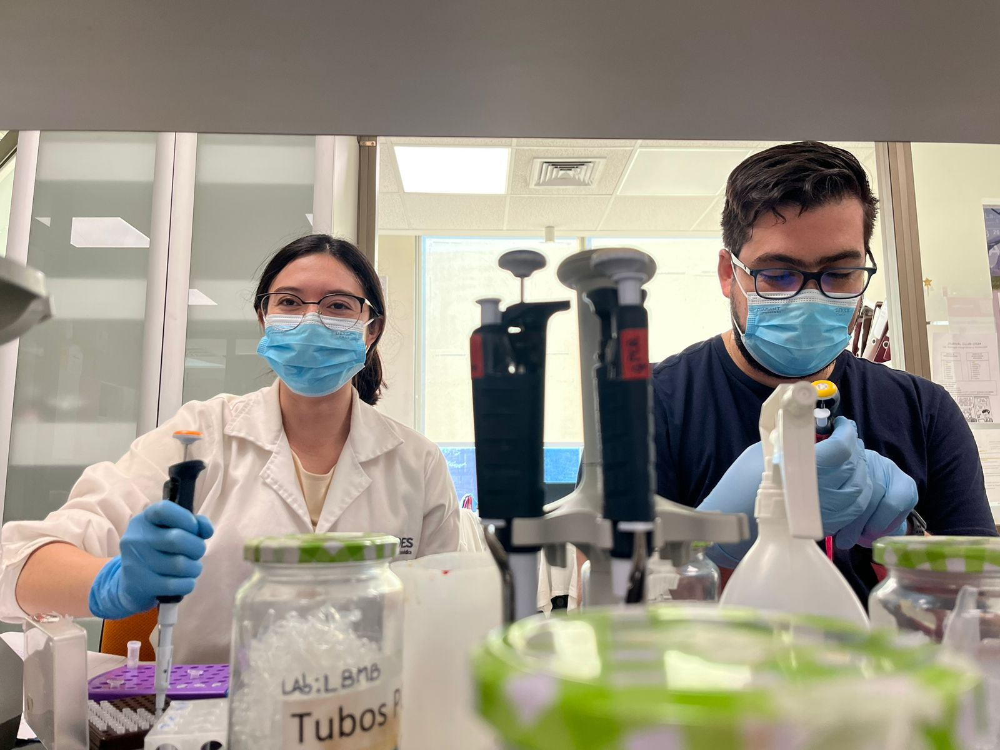
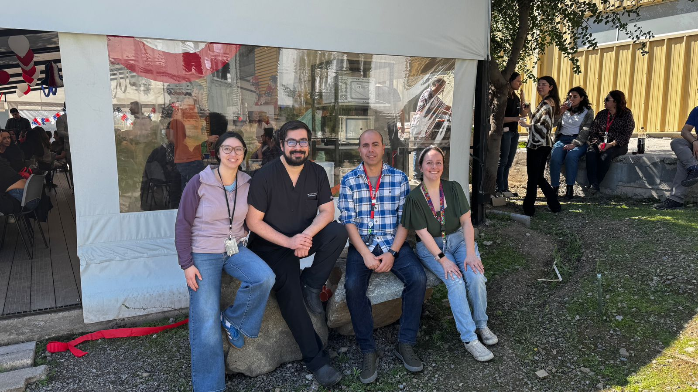
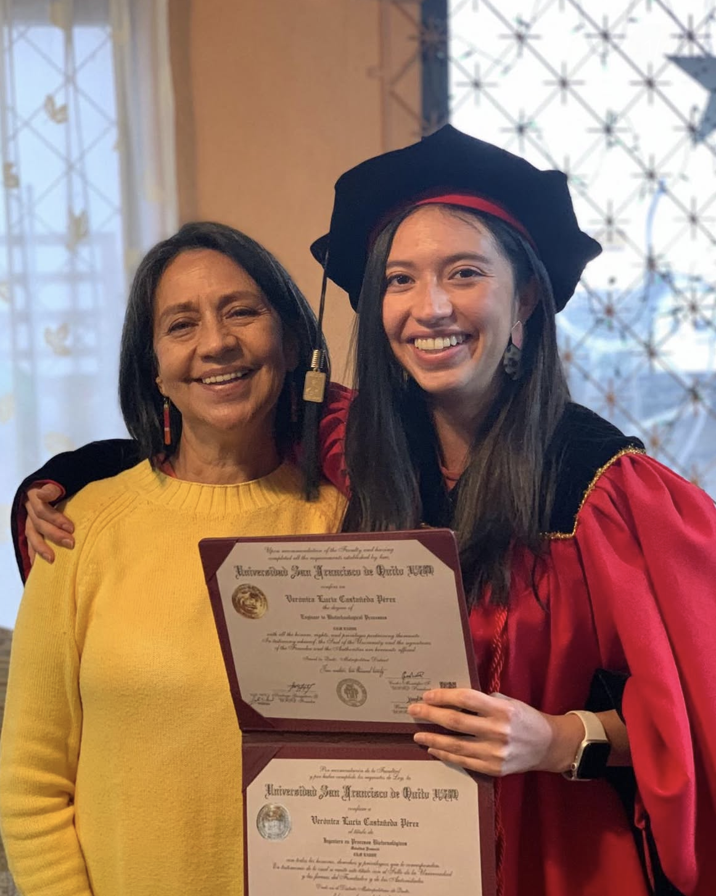
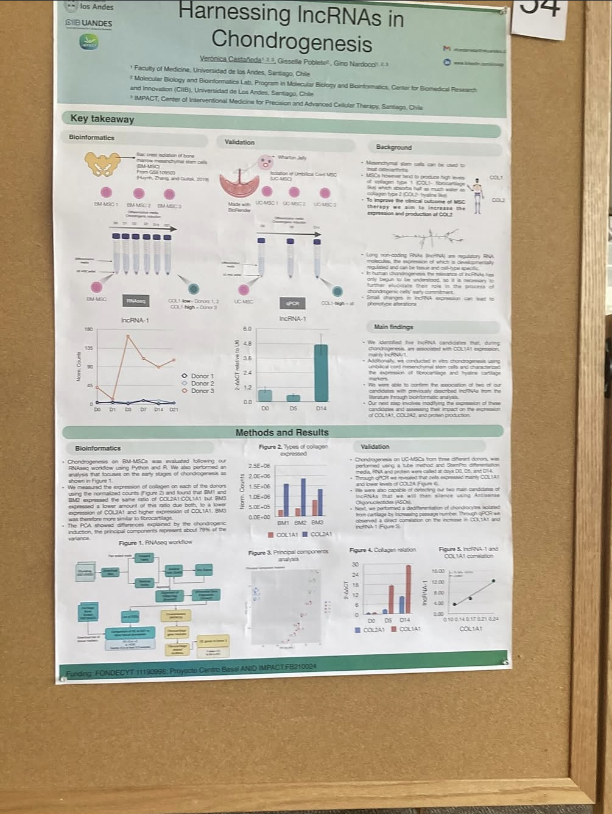
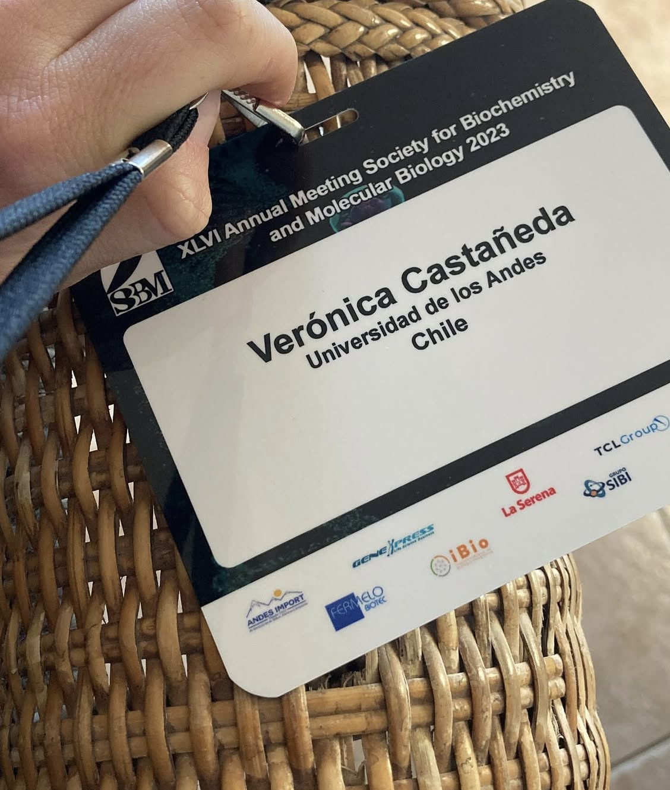
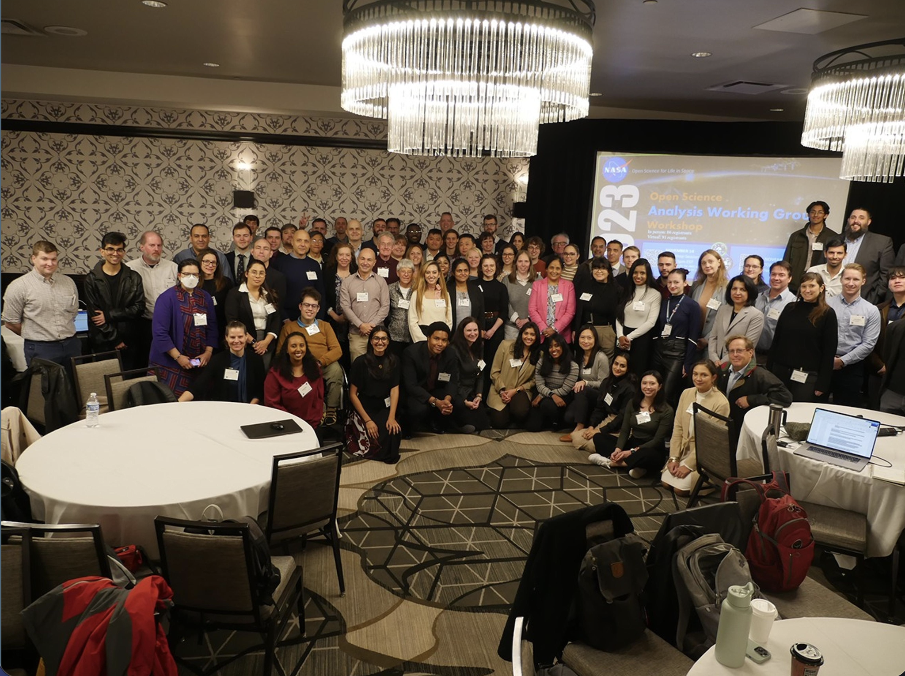
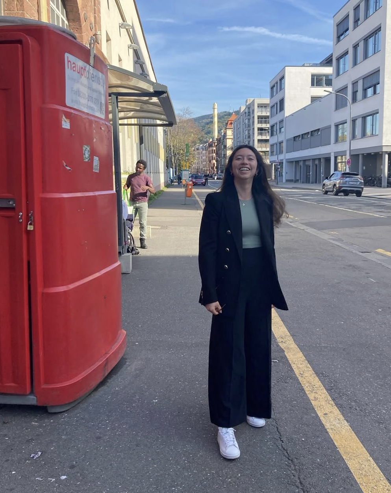
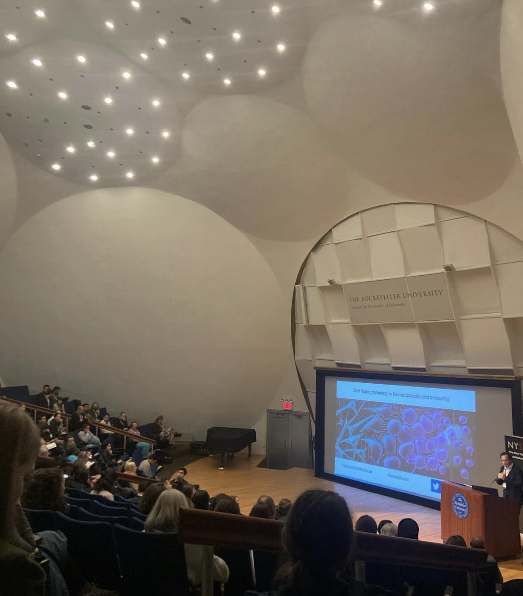

I study how long non-coding RNAs guide stem cells toward becoming cartilage, using bioinformatics to advance regenerative medicine, healthy aging, and space life sciences.
I’m a PhD candidate in Biomedicine at Universidad de los Andes in Santiago, Chile, working in the
Laboratorio de Biología Molecular y Bioinformática
with Gino Nardocci. My work combines experimental and computational approaches, from stem cell biology and
transcriptomics to space biology, which I pursue as a member of NASA GeneLab’s Multiomics Analysis Working Group.
Before this, I studied Biotechnological Processes at Universidad San Francisco de Quito in Ecuador, where my
undergraduate thesis
used molecular modeling to study POU1F1 mutations in hypopituitarism. My doctoral training also took me to the
Albert Einstein College of Medicine for a research internship.
Outside the lab, I do science outreach: I edited and wrote for Revista CiiB, ran scientific workshops with
high schoolers, and tutored math and English for children whose schooling was disrupted by the pandemic.

Your real caption here.

Your real caption here.

Graduating as Engineer in Biotechnological Processes, Universidad San Francisco de Quito, 2020.
Research
My research asks which long non-coding RNAs (lncRNAs) steer mesenchymal stem cells toward becoming
cartilage-producing chondrocytes. I’m currently focused on:
Long non-coding RNAs
Chondrogenesis
Stem cells and regenerative medicine
Transcriptomics and multi-omics
Space biology and aging
Mitochondrial biology
Current projects
Long non-coding RNAs in cartilage cell differentiation
Doctoral thesis, with Gino Nardocci
Identifying the lncRNAs that are key to chondrocyte differentiation, as a step toward targeted
modulation of stem cell phenotype. I’ve presented this work at EMBL, NYSCF, and the Chilean Society for
Biochemistry and Molecular Biology.
Ongoing since 2022, with the NASA GeneLab Multiomics Analysis Working Group
I analyze transcriptomic datasets on sarcopenia and frailty as part of international collaborations in
aging and space biology. Our 2024 paper in Scientific Reports shows that aging and putative frailty
biomarkers are altered by spaceflight.
Colored avocado (Persea americana Mill.) seed extract using a natural deep eutectic solvent for potential sustainable food coloring applications: towards a circular bioeconomy
Lourdes M. Orejuela-Escobar, Carolina Tituaña, Arleth Gualle, Andrea C. Landázuri, Edgar J. Guerrón-Orejuela,
Emilia Morales, Verónica Castañeda, Andrés Caicedo.
RSC, 2026.
Clinical-grade extracellular vesicles derived from umbilical cord mesenchymal stromal cells: preclinical development and first-in-human intra-articular validation as therapeutics for knee osteoarthritis
Exploring the Regulatory Role of lncRNAs in Chondrogenesis: Towards Targeted Mesenchymal Stem Cell Phenotype Modulation
Verónica Castañeda. Poster presented at the Chilean Society for Biochemistry and Molecular Biology meeting, La Serena, October 2023. UANDES travel grant.
Placeholder: poster session at EMBL The Complex Life of RNA, October 2022.

Placeholder: presenting at the NYSCF conference, October 2023.

Placeholder: Chilean Society for Biochemistry and Molecular Biology, La Serena, October 2023.

Placeholder: ASGSR 2021.

Placeholder: poster session at EMBL The Complex Life of RNA, October 2022.

Placeholder: Rockefeller.
Teaching
Teaching and mentoring are a big part of how I work. Below are my teaching roles, along with the courses and
certificates that shaped my analysis skills.
Teaching roles
2023–2025Teaching Assistant, Molecular and Cellular BiologyUniversidad de los Andes, Chile. Wrote and graded assessments, led discussion sessions and study groups, and mentored doctoral students.
2020–2021Bioinformatics TeacherID Core Biotechnology, Ecuador. Taught protein modeling online to an international audience and prepared the tests, homework, and course material.
2017–2019Teaching Assistant in Botany and Learning Center TutorUniversidad San Francisco de Quito, Ecuador. Ran practical exercises, assessed students, and mentored them in bioinformatics and lab work alongside Andrés Caicedo.
Courses and certificates
2025R ProgrammingUniversidad de los Andes
2025Machine LearningUniversidad de los Andes
2024NASA Open Science 101Certificate of Achievement, NASA
Awards
2025Springer Nature Article of the Year AwardFor the clinical-grade extracellular vesicle paper in the Journal of Nanobiotechnology. Announcement
2021Academic Excellence AwardUANDES PhD Program in Biomedicine
Sep 2020Siemens Engineers for Change (E4C) prizeWith mechanical and civil engineers, designed a sustainable desalination project for Santa Elena, Esmeraldas, Ecuador. Story
Sep 2020BRAIN Chile winnersWound healing therapy, the foundation of Dragon BioMed
Fellowships and grants
PhD fellowships from ANID, IMPACT, and Universidad de los Andes.
Training grants from the NASA OSDR Analysis Working Group and EMBO. Conference travel grants from EMBO (2022)
and UANDES (2023).
Contact
I’m always glad to hear from people working on related problems, students, and potential collaborators.
The easiest way to reach me is by
email.
PhD Program in Biomedicine, Universidad de los Andes, Santiago, Chile
Languages: Spanish (native), English (C2), French (B2), German (A2)